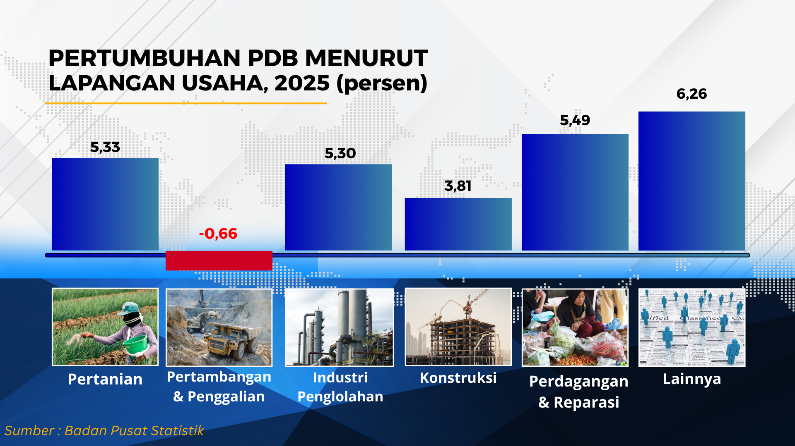
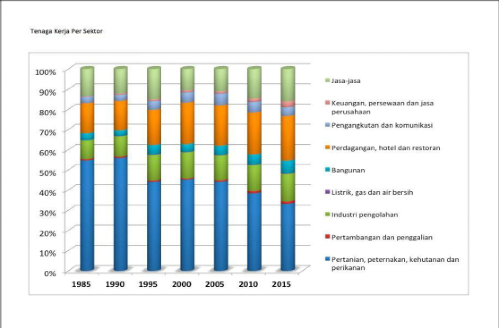
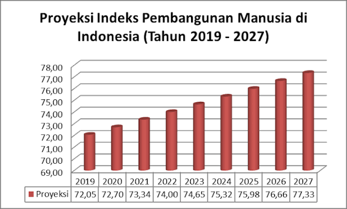

Pembangunan Konvensional
Pembangunan konvensional adalah pembangunan yang fokus terhadap kemajuan materi dan fisik berupa pertumbuhan ekonomi dan pembangunan infrastruktur fisik, sehingga mengesampingkan keseimbangan lingkungan, pemerataan sosial dalam jangka panjang, dan kesehatan. Pembangunan konvensional dilakukan melalui industrialisasi, modernisasi, dan peningkatan pendapatan masyarakat. Perencanaan dan pelaksanaan dari pembangunan konvensional bergantung pada pemerintah, dan kurang melibatkan peran masyarakat.
Tujuan
Meningkatkan pendapatan nasional dan pendapatan per kapita masyarakat
Menciptakan lapangan kerja massal melalui perluasan sektor industri dan manufaktur
Memodernisasi struktur sosial dan ekonomi agar setara dengan negara-negara maju
Jenis
Berbasis Pertumbuhan
: Fokus terhadap pendapatan modal, peningkatan investasi, dan kenaikan Produk Domestik Bruto (PDB)Industrialisasi dan Modernisasi
: Mengubah mata pencaharian masyarakat dari sektor agraris menuju sektor industri, manufaktur, dan jasa.Infrastruktur Fisik
: Memprioritaskan pembangunan proyek seperti jalan tol, bendungan, pelabuhan, dan kawasan industri untuk mempercepat arus barang dan modal.
Ciri-Ciri
Fokus pada pertumbuhan ekonomi
: Mengutamakan kenaikan Produk Domestik Bruto (PDB) dan pendapatan per kapita sebagai ukuran utama keberhasilan pembangunan.Perubahan struktur ekonomi
: Mengganti sektor ekonomi dari sektor agraris menjadi sektor industri, manufaktur, dan jasa modern.Pengembangan infrastruktur dan modal
: Menekankan pendapatan modal, investasi, dan pembangunan fisik atau infrastruktur untuk memacu produktivitas.
Ukuran Keberhasilan
-

1.Indikator Moneter
• Produk Domestik Bruto (PDB / GDP) dan pertumbuhan ekonomi: Total nilai barang dan jasa akhir yang diproduksi suatu negara serta laju pertumbuhannya dalam jangka waktu tertentu
• Pendapatan per kapita (PDB atau PNB per kapita): Rata-rata pendapatan penduduk
• Angka tabungan dan investasi: Kapasitas pendapatan modal dan dorongan perluasan usaha
• Tingkat inflasi: Stabilitas harga barang dan jasa dalam perekonomian
-

2. Indikator Non-Moneter
• Perubahan Struktur Ekonomi: Perubahan sektor ekonomi dari sektor agraris ke sektor industri dan jasa
• Tingkat Urbanisasi: Jumlah penduduk yang tinggal di wilayah perkotaan seiring perubahan ekonomi dan lapangan kerja
• Indeks Kualitas Hidup: Mengukur kesejahteraan dasar melalui angka kematian bayi, angka harapan hidup, dan tingkat melek huruf
• Kondisi Ketenagakerjaan dan Kemiskinan: Tingkat pengangguran dan persentase penduduk miskin.
-

3. Indikator Campuran
• Indeks Pembangunan Manusia: Mengukur dimensi kesehatan (usia harapan hidup), pengetahuan (harapan lama sekolah dan rata-rata lama sekolah), serta standar hidup layak (pengeluaran per kapita yang disesuaikan).